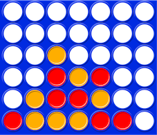

Présentation
Contents
1. Présentation#
Ce sujet propose de développer un jeu puissance 4. Les questions vous guident dans ce développement. Des tests d’auto-validation suivent chaque question et vous aident à valider vos traitements. Ne pas continuer dès qu’un test déclenche une exception ou produit des messages d’erreur. Dans ce cas, vos traitements sont erronés et vous devez les corriger avant d’aller plus loin dans la résolution du sujet.
1.1. Le jeu puissance 4#
Le jeu puissance 4 est un jeu de stratégie dont le but est d’aligner une suite de 4 pions de même couleur sur une grille comptant 6 lignes horizontales et 7 colonnes verticales.

Il y a deux joueurs. Chacun dispose de 21 pions d’une couleur, en général jaune ou rouge.
Tour à tour, les joueurs placent un pion dans la colonne de leur choix. Le pion tombe dans la colonne jusqu’à la position la plus basse possible. Puis c’est à l’adversaire de jouer de façon similaire avec ses jetons.
Le vainqueur est le joueur qui réalise le premier un alignement horizontal ou vertical ou diagonal d’au moins quatre pions consécutifs de sa couleur.
Si, alors que toutes les cases de la grille de jeu sont remplies, aucun des deux joueurs n’a réalisé un tel alignement, la partie est déclarée nulle.
1.2. La grille et les jetons de couleurs#
Constantes.
Les couleurs
JAUNEetROUGEsont des constantes entières égales à 1 et 2 respectivement.NBLetNBCsont des constantes entières égales à 6 et 7 respectivement. Elles représentent le nombre de lignes et le nombre de colonnes du jeu réel.
L’énumératif couleurs regroupe les constantes JAUNE et ROUGE. Il sert pour noter le type de paramètre(s) de couleur dans la définition de fonctions.
JAUNE = 1
ROUGE = 2
couleurs = (JAUNE, ROUGE)
NBL = 6 # nbre de lignes
NBC = 7 # nbre de colonnes
Grille de jeu.
La grille du jeu est un tableau 2D de valeurs entières.
Dans la suite, la grille de jeu sera de taille
NBL x NBC.Cependant les fonctions qui définissent les traitements de la grille de jeu seront paramétrés par
dimvetdimhpour représenter des grilles de taille quelconquedimv x dimh.IMPORTANT : la grille de jeu est stockée ligne par ligne à partir de la ligne du bas – la ligne 0 du tableau représente la ligne du bas de la grille de jeu, cad. la ligne qui accueille le premier pion joué dans une partie.
La cellule suivante définit deux états de la grille de jeu.
la grille
g0est vide – comme en début de jeu. Elle est représentée comme un tableau 2D de zéros : la valeur 0 représente une case videla grille
g1correspond à l’image du début du sujet.
g0 = [[0 for j in range(NBC)] for i in range(NBL)]
g1 = [[2,1,1,1,2,2,0],
[0,1,2,2,1,0,0],
[0,0,2,1,2,0,0],
[0,0,1,0,0,0,0],
[0,0,0,0,0,0,0],
[0,0,0,0,0,0,0]]
print(g0)
print(g1)
[[0, 0, 0, 0, 0, 0, 0], [0, 0, 0, 0, 0, 0, 0], [0, 0, 0, 0, 0, 0, 0], [0, 0, 0, 0, 0, 0, 0], [0, 0, 0, 0, 0, 0, 0], [0, 0, 0, 0, 0, 0, 0]]
[[2, 1, 1, 1, 2, 2, 0], [0, 1, 2, 2, 1, 0, 0], [0, 0, 2, 1, 2, 0, 0], [0, 0, 1, 0, 0, 0, 0], [0, 0, 0, 0, 0, 0, 0], [0, 0, 0, 0, 0, 0, 0]]
2. Quelques primitives utiles#
2.1. code(couleur)#
Ecrire selon l’en-tête suivant, une fonction code(c : couleurs) -> int qui retourne la valeur entière correspondant à JAUNE ou ROUGE.
Rmq. On illustre ainsi la spécification d’une fonction avec un paramètre formel de “type couleurs” issu de la définition :
couleurs = (JAUNE, ROUGE)
def code(c : couleurs) -> int:
# ENTRER VOTRE CODE A LA PLACE DE CES 2 LIGNES
raise NotImplementedError()
Cell In[3], line 3
raise NotImplementedError()
^
IndentationError: expected an indented block
2.1.1. Auto-validation#
Rappel. La cellule suivante (tests unitaires) doit s’exécuter sans déclencher d’exception ni de message d’erreur.
assert code(JAUNE) == 1
assert code(ROUGE) == 2
---------------------------------------------------------------------------
NameError Traceback (most recent call last)
Cell In[4], line 1
----> 1 assert code(JAUNE) == 1
2 assert code(ROUGE) == 2
NameError: name 'code' is not defined
2.2. couleur(code)#
Ecrire selon l’en-tête suivant, une fonction couleur(c : int) -> str qui retourne la chaine de caractères “jaune” ou “rouge” pour les valeurs entières correspondant à JAUNE et ROUGE, respectivement.
def couleur(c : int) -> str:
# ENTRER VOTRE CODE A LA PLACE DE CES 2 LIGNES
raise NotImplementedError()
Cell In[5], line 3
raise NotImplementedError()
^
IndentationError: expected an indented block
2.2.1. Auto-validation#
assert couleur(1) == "jaune"
assert couleur(2) == "rouge"
---------------------------------------------------------------------------
NameError Traceback (most recent call last)
Cell In[6], line 1
----> 1 assert couleur(1) == "jaune"
2 assert couleur(2) == "rouge"
NameError: name 'couleur' is not defined
2.3. nbJetons()#
On va écrire plusieurs versions successives d’une fonction nbJetons() qui retourne le nombre de jetons d’une grille donnée.
2.3.1. Jaunes ou rouges#
Ecrire selon l’en-tête suivant, la fonction nbJetons() qui retourne le nombre de jetons de couleur c d’une grille g de taille dimv x dimh.
def nbJetons(c : couleurs, g : list[list[int]], dimv : int, dimh : int) -> int:
# ENTRER VOTRE CODE A LA PLACE DE CES 2 LIGNES
raise NotImplementedError()
Cell In[7], line 3
raise NotImplementedError()
^
IndentationError: expected an indented block
Auto-validation#
assert nbJetons(JAUNE, g0, NBL, NBC) == 0
assert nbJetons(ROUGE, g0, NBL, NBC) == 0
assert nbJetons(JAUNE, g1, NBL, NBC) == 7
assert nbJetons(ROUGE, g1, NBL, NBC) == 7
---------------------------------------------------------------------------
NameError Traceback (most recent call last)
Cell In[8], line 1
----> 1 assert nbJetons(JAUNE, g0, NBL, NBC) == 0
2 assert nbJetons(ROUGE, g0, NBL, NBC) == 0
3 assert nbJetons(JAUNE, g1, NBL, NBC) == 7
NameError: name 'nbJetons' is not defined
2.3.2. Jaunes, rouges ou les 2#
On définit la constante TOUS :
TOUS = 3
Reprendre nbJetons() et la compléter de façon à ce que le paramètre couleur c prenne aussi la valeur
TOUS et retourne dans ce cas tous les jetons présents dans la grille de jeu.
def nbJetons(c : couleurs, g : list[list[int]], dimv : int, dimh : int) -> int:
# ENTRER VOTRE CODE A LA PLACE DE CES 2 LIGNES
raise NotImplementedError()
Cell In[10], line 3
raise NotImplementedError()
^
IndentationError: expected an indented block
Auto-validation#
assert nbJetons(TOUS, g1, NBL, NBC) == 14
assert nbJetons(ROUGE, g1, NBL, NBC) == 7
assert nbJetons(JAUNE, g1, NBL, NBC) == 7
---------------------------------------------------------------------------
NameError Traceback (most recent call last)
Cell In[11], line 1
----> 1 assert nbJetons(TOUS, g1, NBL, NBC) == 14
2 assert nbJetons(ROUGE, g1, NBL, NBC) == 7
3 assert nbJetons(JAUNE, g1, NBL, NBC) == 7
NameError: name 'nbJetons' is not defined
g0 = [[0 for j in range(NBC)] for i in range(NBL)]
assert nbJetons(TOUS, g0, NBL, NBC) == 0
assert nbJetons(JAUNE, g0, NBL, NBC) == 0
assert nbJetons(ROUGE, g0, NBL, NBC) == 0
---------------------------------------------------------------------------
NameError Traceback (most recent call last)
Cell In[12], line 2
1 g0 = [[0 for j in range(NBC)] for i in range(NBL)]
----> 2 assert nbJetons(TOUS, g0, NBL, NBC) == 0
3 assert nbJetons(JAUNE, g0, NBL, NBC) == 0
4 assert nbJetons(ROUGE, g0, NBL, NBC) == 0
NameError: name 'nbJetons' is not defined
2.4. NbCasesLibres()#
Ecrire selon l’en-tête suivant, une fonction NbCasesLibres() qui retourne le nombre de cases vides (sans jeton) d’une grille de taille dimv x dimh.
def NbCasesLibres(g : list[list[int]], dimv : int, dimh : int) -> int:
# ENTRER VOTRE CODE A LA PLACE DE CES 2 LIGNES
raise NotImplementedError()
Cell In[13], line 3
raise NotImplementedError()
^
IndentationError: expected an indented block
2.4.1. Auto-validation#
assert NbCasesLibres(g1, NBL, NBC) == 28
---------------------------------------------------------------------------
NameError Traceback (most recent call last)
Cell In[14], line 1
----> 1 assert NbCasesLibres(g1, NBL, NBC) == 28
NameError: name 'NbCasesLibres' is not defined
3. Affichages de la grille#
Objectif 10.
La grille de jeu étant représentée par un tableau 2D, on peut utiliser la fonction d’affichage print() appliquée à un tableau. Bien sûr, on gardera bien en tête que l’affichage alors obtenu correspond aux lignes à partir du bas de la grille.
Exemple. L’exécution de
print(g1)
pour la grille g1de la figure du début donne :
[[2, 1, 1, 1, 2, 2, 0], [0, 1, 2, 2, 1, 0, 0], [0, 0, 2, 1, 2, 0, 0], [0, 0, 1, 0, 0, 0, 0], [0, 0, 0, 0, 0, 0, 0], [0, 0, 0, 0, 0, 0, 0]]
Objectif 20. Un affichage plus agréable va être développé en 2 étapes :
d’abord un affichage de la grille uniquement,
puis un affichage complété avec les numéros des lignes et des colonnes tels que les voient les joueurs.
3.1. (\(\star\)) grille_en_str()#
Le premier affichage sera tel que :
les cases vides sont affichées avec le caractère
'.'les pions jaunes sont affichées avec le caractère
'O'les pions rouge sont affichées avec le caractère
'X'
Pour cela, on va écrire une fonction grille_en_str( ) qui transforme la grille de jeu en une chaîne de caractères adaptée qui, ensuite, pourra être affichée d’un seul print et donner l’affichage souhaité.
L’en-tête de cette fonction est définie dans la cellule suivante.
Cette fonction retourne la chaîne de caractère construite par l’algorithme suivant :
chaque ligne de la grille est interprétée comme une chaîne de 6 caractères séparés par des espaces ;
chaque chaîne de caractères est concaténée dans un ordre adéquat dans une chaîne globale qui représentera la grille complète ;
cette chaîne globale sera retournée pour obtenir l’affichage demandé.
On rappelle que le caractère spécial \n permet un saut de ligne.
Ainsi
print( grille_en_str(g1) )
donnera l’affichage de la grille g1 suivant.
. . . . . . .
. . . . . . .
. . O . . . .`
. . X O X . .
. O X X O . .
X O O O X X .
def grille_en_str(g : list[list[int]], dimv : int, dimh : int) -> str:
# ENTRER VOTRE CODE A LA PLACE DE CES 2 LIGNES
raise NotImplementedError()
Cell In[15], line 3
raise NotImplementedError()
^
IndentationError: expected an indented block
# Ne pas écrire dans cette cellule
(\(\star\)) application
Vérifier que l’affichage suivnt de g1 est identique à celui indiqué au dessus.
print(grille_en_str(g1, NBL, NBC))
---------------------------------------------------------------------------
NameError Traceback (most recent call last)
Cell In[17], line 1
----> 1 print(grille_en_str(g1, NBL, NBC))
NameError: name 'grille_en_str' is not defined
3.2. (\(\star\)) afficher avec numéros lignes et colonnes vues par le joueur#
Attention : bien lire ce passage qui définit 2 numérotations différentes.
numérotation-joueur : le joueur compte les lignes et les colonnes à partir de 1 et en partant de la ligne du bas et de la colonne de gauche de la grille (voir exemple ci-dessous).
numérotation-développeur : le développeur que vous êtes utilise la numérotation du tableau qui représente la grille (attention à l’ordre des lignes).
print()permet un affichage
Par la suite, nous indiquerons explicitement les cas où cette numérotation-joueur devra être utilisée (pour afficher(), atoidejouer() et jeu()).
Sinon, la numérotation-développeur reste celle à utiliser.
Si besoin :
afficher()est adapté pour visualiser la numérotation-joueurprint()est adapté pour visualiser la numérotation-développeur.
Ecrire la fonction afficher() selon l’en-tête suivant où le paramètre booléen debug permet de compléter l’affichage précédent avec les numéros-joueur des lignes et des colonnes de la grille comme ci-dessous pour g1.
. . . . . . . |6
. . . . . . . |5
. . O . . . . |4
. . X O X . . |3
. O X X O . . |2
X O O O X X . |1
-------------
1 2 3 4 5 6 7
Si debug == True, afficher() réalisera l’affichage ci-dessus.
Si debug == False, afficher() réalisera l’affichage sans numéro de lignes, ni de colonnes.
Cette fonction pourra s’inspirer de la fonction grille_en_str().
Elle réalise l’affichage demandé : il s’agit donc d’une procédure d’affichage (qui mélange des traitements spécifiques et des entrées-sorties).
def afficher(g : list[list[int]], dimv : int, dimh : int, debug : bool) -> None:
# ENTRER VOTRE CODE A LA PLACE DE CES 2 LIGNES
raise NotImplementedError()
Cell In[18], line 3
raise NotImplementedError()
^
IndentationError: expected an indented block
# Ne pas écrire dans cette cellule
(\(\star\)) application
Vérifier que les affichages de g1 sont identiques à ceux indiqués au dessus.
print(afficher(g1, NBL, NBC, debug=True))
print(afficher(g1, NBL, NBC, debug=False))
---------------------------------------------------------------------------
NameError Traceback (most recent call last)
Cell In[20], line 1
----> 1 print(afficher(g1, NBL, NBC, debug=True))
2 print(afficher(g1, NBL, NBC, debug=False))
NameError: name 'afficher' is not defined
4. estValide()#
Cette question n’est pas indispensable pour la suite des traitements.
Une grille est valide si les conditions suivantes sont satisfaites.
la grille comporte 6 lignes et 7 colonnes
les pions jaunes commençant, il y a le même nombre de pions jaunes et de pions rouges ou un pion jaune de plus
il y a 21 pions jaunes au plus
il n’y a pas de case vide “sous” une case non vide
Ecrire une fonction estValide()
selon l’en-tête suivante qui vérifie la validité d’une grille.
def estValide(g : list[list[int]], dimv : int, dimh : int) -> bool:
# ENTRER VOTRE CODE A LA PLACE DE CES 2 LIGNES
raise NotImplementedError()
Cell In[21], line 3
raise NotImplementedError()
^
IndentationError: expected an indented block
4.1. Auto-validation#
Validez la cellule suivante qui défini la grille non-valide gbad utilisée pour les tests et les auto-validations.
g1 = [[2, 1, 1, 1, 2, 2, 0], [0, 1, 2, 2, 1, 0, 0], [0, 0, 2, 1, 2, 0, 0], [0, 0, 1, 0, 0, 0, 0], [0, 0, 0, 0, 0, 0, 0], [0, 0, 0, 0, 0, 0, 0]]
gbad = [[2, 1, 1, 1, 2, 2, 0], [0, 1, 2, 2, 1, 0, 0], [0, 0, 0, 1, 2, 0, 0], [0, 0, 1, 0, 0, 0, 0], [0, 0, 0, 0, 0, 0, 0], [0, 0, 0, 0, 0, 0, 0]]
La cellule d’auto-validation suivante doit s’exécuter sans erreur.
assert estValide(g1, NBL, NBC) == True
assert estValide(gbad, NBL, NBC) == False
---------------------------------------------------------------------------
NameError Traceback (most recent call last)
Cell In[23], line 1
----> 1 assert estValide(g1, NBL, NBC) == True
2 assert estValide(gbad, NBL, NBC) == False
NameError: name 'estValide' is not defined
5. Gagné ou pas encore ?#
On va examiner les 4 alignements gagnants d’une couleur donnée.
alignement horizontal : 4 pions de même couleur consécutivement alignés sur une ligne
alignement vertical : 4 pions de même couleur consécutivement alignés sur une colonne
alignement selon une diagonale SudEst-NordOuest : 4 pions de même couleur consécutivement alignés sur une diagonale “d’en bas à gauche vers le haut à droite”
alignement selon une diagonale SudOuest-NordEst : 4 pions de même couleur consécutivement alignés sur une diagonale “d’en bas à droite vers le haut à gauche”
5.1. horiz()#
Ecrire selon l’en-tête suivant, la fonction horiz() qui vérifie si la grille présente un alignement horizontal gagnant d’une couleur donnée : 4 pions de même couleurs consécutivement alignés sur une ligne.
Cette fonction retourne le numéro de la ligne de l’alignement trouvé ou -1 sinon.
Attention : les lignes sont en numéro-développeur.
def horiz(c : couleurs, g : list[list[int]], dimv : int, dimh : int) -> int:
# ENTRER VOTRE CODE A LA PLACE DE CES 2 LIGNES
raise NotImplementedError()
Cell In[24], line 3
raise NotImplementedError()
^
IndentationError: expected an indented block
# Ne pas écrire dans cette cellule
5.1.1. Auto-validation#
L’auto-validation suivante doit s’exécuter sans erreur.
g0 = [[0 for j in range(NBC)] for i in range(NBL)]
g0[0] = [1, 2, 1, 2, 1, 2, 1]
g0[1] = [1, 1, 2, 1, 1, 2, 1]
g0[2] = [1, 2, 2, 2, 2, 2, 0]
assert horiz(JAUNE, g0, NBL, NBC) == -1
assert horiz(ROUGE, g0, NBL, NBC) == 2
---------------------------------------------------------------------------
NameError Traceback (most recent call last)
Cell In[26], line 6
3 g0[1] = [1, 1, 2, 1, 1, 2, 1]
4 g0[2] = [1, 2, 2, 2, 2, 2, 0]
----> 6 assert horiz(JAUNE, g0, NBL, NBC) == -1
7 assert horiz(ROUGE, g0, NBL, NBC) == 2
NameError: name 'horiz' is not defined
5.2. vertic()#
Ecrire selon l’en-tête suivant, la fonction vertic() qui vérifie si la grille présente un alignement vertical gagnant d’une couleur donnée (4 pions de même couleur consécutivement alignés sur une colonne).
Cette fonction retourne le numéro de la colonne de l’alignement trouvé ou -1 sinon.
Attention : les colonnes sont en numéro-développeur.
def vertic(c : couleurs, g : list[list[int]], dimv : int, dimh : int) -> int:
# ENTRER VOTRE CODE A LA PLACE DE CES 2 LIGNES
raise NotImplementedError()
Cell In[27], line 3
raise NotImplementedError()
^
IndentationError: expected an indented block
# Ne pas écrire dans cette cellule
5.2.1. Auto-validation#
On définit deux configurations non valides d’une grille qui permettent de vérifier l’alignement vertical gagnant pour chacune des couleurs.
L’auto-validation suivante doit s’exécuter sans erreur.
g_testvert = [[0 for j in range(NBC)] for i in range(NBL)]
for i in range(NBL-2):
g_testvert[i][3] = 1
for i in range(NBL-3):
g_testvert[i][NBC-1] = 2
assert vertic(JAUNE, g_testvert, NBL, NBC) == 3
assert vertic(ROUGE, g_testvert, NBL, NBC) == -1
g_testvert[2][3] = 2
g_testvert[3][NBC-1] = 2
assert vertic(JAUNE, g_testvert, NBL, NBC) == -1
assert vertic(ROUGE, g_testvert, NBL, NBC) == 6
---------------------------------------------------------------------------
NameError Traceback (most recent call last)
Cell In[29], line 7
4 for i in range(NBL-3):
5 g_testvert[i][NBC-1] = 2
----> 7 assert vertic(JAUNE, g_testvert, NBL, NBC) == 3
8 assert vertic(ROUGE, g_testvert, NBL, NBC) == -1
10 g_testvert[2][3] = 2
NameError: name 'vertic' is not defined
5.3. diagoSENO()#
Ecrire selon l’en-tête suivant, la fonction diagoSENO() qui vérifie si la grille présente un alignement diagonal gagnant d’une couleur donnée : 4 pions consécutifs de même couleur diagonalement alignés.
Attention.
L’orientation Nord-Sud est celle du tableau python qui représente la grille de jeu, ie. celle de la numérotation-développeur. Elle est donc inverse à l’orientation de la grille vue par le joueur .
L’orientation Est-Ouest est identique pour la grille vue par le joueur et le tableau python qui la représente.
Cette fonction retourne 1 si un tel alignement est présent ou -1 sinon.
def diagoSENO(c : couleurs, g : list[list[int]], dimv : int, dimh : int) -> int:
# ENTRER VOTRE CODE A LA PLACE DE CES 2 LIGNES
raise NotImplementedError()
Cell In[30], line 3
raise NotImplementedError()
^
IndentationError: expected an indented block
# Ne pas écrire dans cette cellule
5.3.1. Auto-validation#
L’auto-validation suivante doit s’exécuter sans erreur.
g_testdiago1 = [[0 for j in range(NBC)] for i in range(NBL)]
for i in range(4):
for j in range(2, 6):
g_testdiago1[i][j] = 2
#afficher(g_testdiago1, NBL, NBC, debug=True)
assert diagoSENO(JAUNE, g_testdiago1, NBL, NBC) == -1
assert diagoSENO(ROUGE, g_testdiago1, NBL, NBC) == 1
g_testdiago1[0][5] = 1
#afficher(g_testdiago1, NBL, NBC, debug=True)
assert diagoSENO(JAUNE, g_testdiago1, NBL, NBC) == -1
assert diagoSENO(ROUGE, g_testdiago1, NBL, NBC) == -1
g_testdiago1[4][2] = 2
#afficher(g_testdiago1, NBL, NBC, debug=True)
assert diagoSENO(JAUNE, g_testdiago1, NBL, NBC) == -1
assert diagoSENO(ROUGE, g_testdiago1, NBL, NBC) == 1
---------------------------------------------------------------------------
NameError Traceback (most recent call last)
Cell In[32], line 7
4 g_testdiago1[i][j] = 2
6 #afficher(g_testdiago1, NBL, NBC, debug=True)
----> 7 assert diagoSENO(JAUNE, g_testdiago1, NBL, NBC) == -1
8 assert diagoSENO(ROUGE, g_testdiago1, NBL, NBC) == 1
10 g_testdiago1[0][5] = 1
NameError: name 'diagoSENO' is not defined
5.4. diagoSONE()#
Ecrire selon l’en-tête suivant, la fonction diagoSONE() qui vérifie l’autre alignement diagonal gagnant d’une couleur donnée.
Cette fonction retourne 1 si un tel alignement est présent, ou -1 sinon.
def diagoSONE(c : couleurs, g : list[list[int]], dimv : int, dimh : int) -> int:
# ENTRER VOTRE CODE A LA PLACE DE CES 2 LIGNES
raise NotImplementedError()
Cell In[33], line 3
raise NotImplementedError()
^
IndentationError: expected an indented block
# Ne pas écrire dans cette cellule
5.4.1. Auto-validation#
L’auto-validation suivante doit s’exécuter sans erreur.
g_testdiago1 = [[0 for j in range(NBC)] for i in range(NBL)]
for i in range(4):
for j in range(2, 6):
g_testdiago1[i][j] = 2
assert diagoSONE(JAUNE, g_testdiago1, NBL, NBC) == -1
assert diagoSONE(ROUGE, g_testdiago1, NBL, NBC) == 1
g_testdiago1[0][5] = 1
assert diagoSONE(JAUNE, g_testdiago1, NBL, NBC) == -1
assert diagoSONE(ROUGE, g_testdiago1, NBL, NBC) == -1
g_testdiago1[4][2] = 2
#afficher(g_testdiago1, NBL, NBC, debug=True)
assert diagoSONE(JAUNE, g_testdiago1, NBL, NBC) == -1
assert diagoSONE(ROUGE, g_testdiago1, NBL, NBC) == 1
---------------------------------------------------------------------------
NameError Traceback (most recent call last)
Cell In[35], line 6
3 for j in range(2, 6):
4 g_testdiago1[i][j] = 2
----> 6 assert diagoSONE(JAUNE, g_testdiago1, NBL, NBC) == -1
7 assert diagoSONE(ROUGE, g_testdiago1, NBL, NBC) == 1
9 g_testdiago1[0][5] = 1
NameError: name 'diagoSONE' is not defined
5.5. est_gagnante()#
Ecrire selon l’en-tête suivant, la fonction est_gagnante() qui vérifie si la grille g est gagnante pour la couleur c.
Cette fonction retourne un booléen.
def est_gagnante(c : couleurs, g : list[list[int]], dimv : int, dimh : int) -> bool:
# ENTRER VOTRE CODE A LA PLACE DE CES 2 LIGNES
raise NotImplementedError()
Cell In[36], line 3
raise NotImplementedError()
^
IndentationError: expected an indented block
# Ne pas écrire dans cette cellule
5.5.1. Auto-validation#
L’auto-validation suivante doit s’exécuter sans erreur.
g0 = [[0 for j in range(NBC)] for i in range(NBL)]
faux = est_gagnante(JAUNE, g0, NBL, NBC)
assert faux == False
faux = est_gagnante(JAUNE, g0, NBL, NBC)
assert faux == False
for i in range(0,4):
g0[i][3] = 1
for j in range(0,3):
g0[0][j] = 2
g0[0][4] = 2
vrai = est_gagnante(JAUNE, g0, NBL, NBC)
assert vrai == True
faux = est_gagnante(ROUGE, g0, NBL, NBC)
assert faux == False
---------------------------------------------------------------------------
NameError Traceback (most recent call last)
Cell In[38], line 2
1 g0 = [[0 for j in range(NBC)] for i in range(NBL)]
----> 2 faux = est_gagnante(JAUNE, g0, NBL, NBC)
3 assert faux == False
4 faux = est_gagnante(JAUNE, g0, NBL, NBC)
NameError: name 'est_gagnante' is not defined
6. Jouons !#
On commence avec une fonction qui réalise l’interface entre le joueur et le jeu.
6.1. à toi de jouer#
Ecrire selon l’en-tête suivant, une fonction atoidejouer() qui demande au joueur dans quelle colonne de g il dépose son jeton de couleur c.
Attention : numérotation. Cette fonction :
prend “en entrée” le numéro-joueur de colonne saisi au clavier,
retourne le numéro-développeur correspondant pour les traitements à suivre.
def atoidejouer(c : couleurs, g : list[list[int]], dimv : int, dimh : int) -> int:
# ENTRER VOTRE CODE A LA PLACE DE CES 2 LIGNES
raise NotImplementedError()
Cell In[39], line 3
raise NotImplementedError()
^
IndentationError: expected an indented block
6.1.1. Auto-validation#
Entrez successivement 1 et 2 et l’auto-validation suivante doit s’exécuter sans erreur.
g0 = [[0 for j in range(NBC)] for i in range(NBL)]
zero = atoidejouer(JAUNE, g0, NBL, NBC)
assert zero == 0
un = atoidejouer(ROUGE, g0, NBL, NBC)
assert un == 1
---------------------------------------------------------------------------
NameError Traceback (most recent call last)
Cell In[40], line 3
1 g0 = [[0 for j in range(NBC)] for i in range(NBL)]
----> 3 zero = atoidejouer(JAUNE, g0, NBL, NBC)
4 assert zero == 0
6 un = atoidejouer(ROUGE, g0, NBL, NBC)
NameError: name 'atoidejouer' is not defined
6.2. jouer()#
Ecrire selon l’en-tête suivant, la fonction jouer() qui ajoute un pion de couleur c à la colonne colonne à la grille de jeu en cours g (de dimensions habituelles).
Cette fonction modifie l’état de la grille g. C’est donc une procédure qui ne retourne aucun résultat (autre que None en python).
Attention : numérotation. colonne désigne la numérotation-développeur.
Pour cette version simple de jouer(), on supposera que les valeurs de c et de colonne ont du sens et ne rendent pas la grille non valide.
def jouer(c : couleurs, colonne : int, g : list[list[int]], dimv : int, dimh : int) -> None:
# ENTRER VOTRE CODE A LA PLACE DE CES 2 LIGNES
raise NotImplementedError()
Cell In[41], line 3
raise NotImplementedError()
^
IndentationError: expected an indented block
6.2.1. Auto-validation#
L’auto-validation suivante doit s’exécuter sans erreur.
# g1 dans son état initial
g1 = [[2, 1, 1, 1, 2, 2, 0], [0, 1, 2, 2, 1, 0, 0], [0, 0, 2, 1, 2, 0, 0], [0, 0, 1, 0, 0, 0, 0], [0, 0, 0, 0, 0, 0, 0], [0, 0, 0, 0, 0, 0, 0]]
# un tour de jeu
jouer(JAUNE, 1, g1, NBL, NBC)
jouer(ROUGE, 3, g1, NBL, NBC)
# vérifications
assert g1[2][1] == code(JAUNE)
assert g1[3][3] == code(ROUGE)
---------------------------------------------------------------------------
NameError Traceback (most recent call last)
Cell In[42], line 5
2 g1 = [[2, 1, 1, 1, 2, 2, 0], [0, 1, 2, 2, 1, 0, 0], [0, 0, 2, 1, 2, 0, 0], [0, 0, 1, 0, 0, 0, 0], [0, 0, 0, 0, 0, 0, 0], [0, 0, 0, 0, 0, 0, 0]]
4 # un tour de jeu
----> 5 jouer(JAUNE, 1, g1, NBL, NBC)
6 jouer(ROUGE, 3, g1, NBL, NBC)
8 # vérifications
NameError: name 'jouer' is not defined
6.3. jeu()#
On peut maintenant utiliser les développements précédents pour écrire selon l’en-tête suivant, une fonction jeu() qui permet à deux joueurs de jouer comme suit.
Avec
atoidejouer(), demander à chaque joueur de jouer à son tour, en commençant par les jaunes.On suppose (ici) que le joueur choisit une colonne valide
La grille de jeu est affichée après chaque action de jeu
Le jeu s’arrête quand un des joueurs a gagné ou en cas d’égalité (blocage)
Le résultat est affiché à l’écran comme suit :
Les pions jaunes/rouges gagnent. Bravo !
ou en cas d’égalité (blocage) :
Egalité ... Recommencez !
La partie s’effectue en complétant la grille g qui est :
soit une grille vide à créer avant l’appel,
soit une grille partiellement remplie provenant de la lecture d’un fichier (comme G1.txt). Dans ce cas, il faut donc vérifier la validité de la grille lue dans le fichier et, si besoin afficher le message :
Grille invalide. Jeu stoppé.
def jeu(g : list[list[int]], dimv : int, dimh : int) -> None:
# ENTRER VOTRE CODE A LA PLACE DE CES 2 LIGNES
raise NotImplementedError()
Cell In[43], line 3
raise NotImplementedError()
^
IndentationError: expected an indented block
6.3.1. Auto-validation 1#
Entrez successivement 2, 2 pour que l’exécution de la cellule suivante fasse gagner les rouges (X).
# g1 dans son état initial
g1 = [[2, 1, 1, 1, 2, 2, 0], [0, 1, 2, 2, 1, 0, 0], [0, 0, 2, 1, 2, 0, 0], [0, 0, 1, 0, 0, 0, 0], [0, 0, 0, 0, 0, 0, 0], [0, 0, 0, 0, 0, 0, 0]]
print("Entrer 2 puis 2 et les rouges gagnent")
jeu(g1, NBL, NBC)
Entrer 2 puis 2 et les rouges gagnent
---------------------------------------------------------------------------
NameError Traceback (most recent call last)
Cell In[44], line 4
2 g1 = [[2, 1, 1, 1, 2, 2, 0], [0, 1, 2, 2, 1, 0, 0], [0, 0, 2, 1, 2, 0, 0], [0, 0, 1, 0, 0, 0, 0], [0, 0, 0, 0, 0, 0, 0], [0, 0, 0, 0, 0, 0, 0]]
3 print("Entrer 2 puis 2 et les rouges gagnent")
----> 4 jeu(g1, NBL, NBC)
NameError: name 'jeu' is not defined
6.3.2. Auto-validation 2#
Entrez successivement 2, 1, 2 pour que l’exécution de la cellule suivante fasse gagner les jaunes (O).
g1 = [[2, 1, 1, 1, 2, 2, 0], [0, 1, 2, 2, 1, 0, 0], [0, 0, 2, 1, 2, 0, 0], [0, 0, 1, 0, 0, 0, 0], [0, 0, 0, 0, 0, 0, 0], [0, 0, 0, 0, 0, 0, 0]]
print("Entrer 212 et les jaunes gagnent")
jeu(g1, NBL, NBC)
Entrer 212 et les jaunes gagnent
---------------------------------------------------------------------------
NameError Traceback (most recent call last)
Cell In[45], line 3
1 g1 = [[2, 1, 1, 1, 2, 2, 0], [0, 1, 2, 2, 1, 0, 0], [0, 0, 2, 1, 2, 0, 0], [0, 0, 1, 0, 0, 0, 0], [0, 0, 0, 0, 0, 0, 0], [0, 0, 0, 0, 0, 0, 0]]
2 print("Entrer 212 et les jaunes gagnent")
----> 3 jeu(g1, NBL, NBC)
NameError: name 'jeu' is not defined